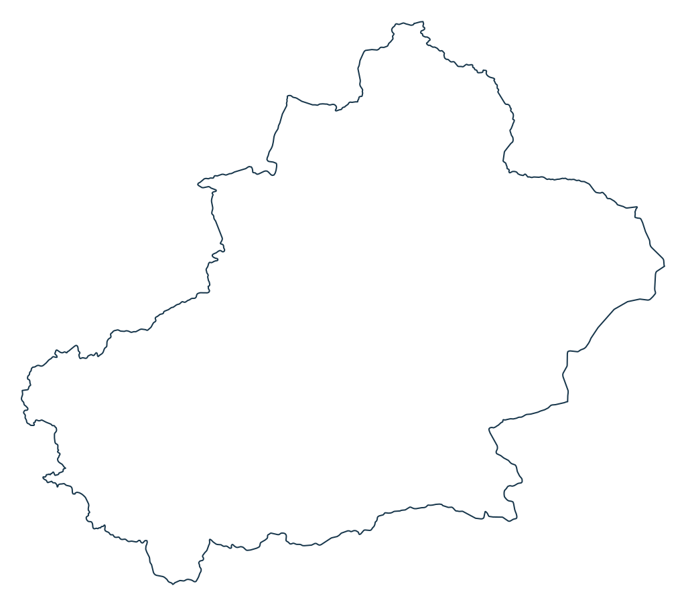

ئۆز تىلىڭىزدا قۇرايلى.
كىچىك بۆلەك.
چەكسىز ئىمكانىيەت.
ئۇيغۇرچە تور بەتلەر ئۈچۈن نەپىس كۆرۈنمە يۈز بۆلەكلىرى. سىناڭ، كودىنى كۆچۈرۈڭ، ئۆز ئىجادىيىتىڭىزگە قوشۇڭ.
RTL · SVG · CSS · ESM يېنىك، ئوچۇق ۋە خاسلاشتۇرغىلى بولىدۇ.
01 / ئىجاد قىلىشقا تەييار
بىرلىكتە ماسلىشىدۇ.
بۆلەكلەر يۈكلىنىۋاتىدۇ…
ماس بۆلەك تېپىلمىدى.
02 / مىراستىن ئىلھام ئالغان سىنبەلگىلەر
110 سىنبەلگە، ئىككى ئۇسلۇب.
سازدىن داستىخانغىچە.
ئۇيغۇر مەدەنىيىتىدىن ئىلھام ئالغان 63 سىنبەلگە. دۇتار، دوپپا، ئەتلەس، كىيىم ۋە گۈللۈك نەقىشلەرنى ئۆز لايىھەڭىزگە قوشۇڭ.
پاكىز سىزىق ياكى مىراس رەڭلىرىنى تاللاڭ. بۇلار پايدىلىنىش رەسىملىرىدىكى تېمىلاردىن ئىلھام ئېلىپ يېڭىدىن سىزىلغان SVG سىنبەلگىلەر.
63 مەدەنىيەت سىنبەلگىسى ئىككى ئۇسلۇبتا؛ 47 UI سىنبەلگىسى سىزىق ئۇسلۇبىدا.
ماس سىنبەلگە تېپىلمىدى. باشقا سۆز ياكى تۈرنى سىناڭ.
03 / كۆك بايراق
شەرقىي تۈركىستان بايرىقى.
كۆك رەڭ، ئاق ئاي ۋە يۇلتۇز. چوڭايتقاندا سۈپىتى ساقلىنىدىغان مۇستەقىل SVG ھۆججىتى.


04 / ماكان ۋە خاتىرە
شەرقىي تۈركىستان خەرىتىسى.
پاكىز سىزىق ۋە كۆك رەڭلىك تولۇق نۇسخا. سۈپىتىنى يوقاتماي چوڭايتىڭ، SVG نى بىۋاسىتە ئىشلىتىڭ.
پاكىز سىزىق · شىمال ئۈستىدە


Natural Earth نىڭ Xinjiang / CN-XJ مەمۇرىي رايون سانلىق مەلۇماتىدىن، 5.1.1 نەشرى. ھازىرقى مەمۇرىي سىزىقنى ئاساس قىلىدۇ؛ تارىخىي چېگرا خەرىتىسى ئەمەس. ئىشلىتىش قوللانمىسى ←

05 / ئۆز تۈرىڭىزگە
بىر قۇر بىلەن باشلاڭ.
GitHub نەشر ئارخىپىنى قاچىلاڭ. رامكا تاللاش چەكلىمىسى يوق؛ ئاددىي HTML بىلەنمۇ ئىشلىتىڭ.
npm تىزىملىكىگە ئېلان قىلىش ھازىرچە كېچىكتۈرۈلگەن. بۇ بۇيرۇق GitHub نەشرىنى قاچىلايدۇ.
تولۇق API ۋە مىساللار ↗npm install https://github.com/UyghurCommunity/uyghur-ui/releases/download/v0.4.0/uyghurcommunity-ui-0.4.0.tgzimport '@uyghurcommunity/ui/styles.css';
import { bindDialog, iconSVG } from '@uyghurcommunity/ui';